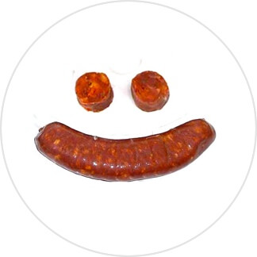

Chorizo Ibérico™ MINI "Pequeño Nicolai"
- Chorizo joven.
- Pequeño y compacto.
- Facilmente transportable y desechable.
- Delicioso.
Profesional de la poltrona, su grasa es de la más alta calidad.
Se hace pasar por empresario. Presencia impecable.
No apto para jovenes en edad de hipoteca ni jubilados ahorradores.
Manda todos los Tweets que quieras con el hashtag #enLaMuelaNosComemosAlosChorizos
El tweet que obtenga más RTs antes de las doce de la noche del domingo 17 será el ganador.
GANAR La Muela es una coalición electoral entre IU y miembros del Círculo Podemos de La Muela